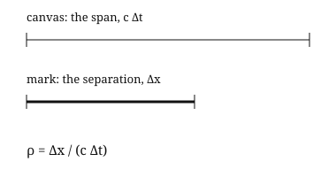
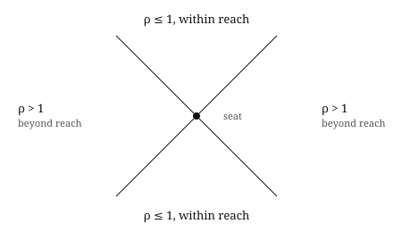
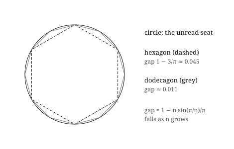
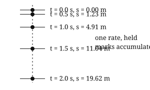
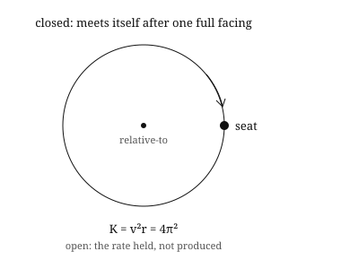
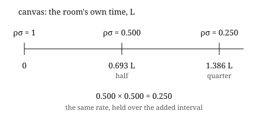

One formula, any expression. Every measurement is one distance read against another.
The primitive is the disparity. Every measurement is one distance read against another. Nothing else enters. There is no producer seated outside the expression, no ground beneath it, no law above it. The disparity is the relative-to itself.
Distance is expressed due to scale/ratio disparity. The negotiation is a disparity of expression, offering expression. Expression is relative to distance. Distance contrasted can only offer distance.
The form is one formula.
ρ = Δx / (c Δt)
A ratio is not a measure applied to two distances. It is the disparity itself when one contrast is faced against the other. Δx and cΔt are not inputs. They are the two seats of the same facing. ρ is that facing held as one. There is no operation that produces the ratio. The ratio is the expression of the disparity.
Δx is a spatial contrast. cΔt is a temporal contrast — the distance light spans in the facing. c is the constant mode of the disparity when the disparity is read as constant. ρ is the reading: one contrast held relative to another.
Commitments (not findings):
Once:
Δx is the spatial contrast.
cΔt is the temporal contrast.
ρ ≡ Δx / (cΔt) is the relative-to.
Thereafter the formal claims:
Invariance under re-orientation
ρ(seat₁) = ρ(seat₂) when the same disparity is faced.
(Orientation supplies only scale and sign; the rate is held.)
Equal contribution
Neither contrast is privileged:
|(∂ρ/∂Δx)·Δx| = |(∂ρ/∂(cΔt))·(cΔt)| = ρ.
(The facing of equals.)
No external producer
The expression is closed:
ρ = f(ρ) admits no additional argument seated outside the disparity.
(Any label—mass, force, metric—enters only after.)
Consistency across expressions
Freefall: ρn+1/ρn > 1 (additive widening)
Orbit: K = v²r = 4π² (closed relative)
Cooling: ρσ(t₁+t₂) = ρσ(t₁)·ρσ(t₂) (multiplicative)
Each satisfies the same ρ and the same three claims above.
The seat is co-given with the reading. Orientation offers the scale and the sign. Mark and canvas contribute equally; neither is privileged. The rate is held across the seats. Being and becoming are the same contrast read at the now. The now is not a moment on a line — it is the slice an orientation reads as Δt = 0.
The same relation appears across expressions: freefall, orbit, a cooling cup. The orbit returns K = v²r = 4π², a closed relative-to. The cooling cup returns ρσ(t₁ + t₂) = ρσ(t₁) · ρσ(t₂), a thinning independent of where the facing began. Different numbers, same relation: the relative-to held as a rate, read as distance expressed. That mapping is the evidence. It is the predication — the formula states what the expression is, and the reading returns it.
Lorentz is mentioned as the logic’s form. Two orientations facing one disparity take Lorentz form; it is named, not yielded from ρ alone. When distance measures distance, the ruler is inside the disparity. Planck is one possible later name for the scale at which that self-inclusion becomes visible; no derivation is claimed.
Forces, laws, labels, geometric expression may be added later. They are not declined forever. They are additions after the reading. Mass, force, G — labels. They do not produce the reading; they name what was already read.
The now remains the same, contrasted. Whatever is added, the now does not change. The disparity is read at the now, and the now is the same before and after any addition.
No arrow. No causal production. No prior. No producer outside the expression. The mechanism is the expression functioning as the relative-to.
It’s one formula. Any expression. Consistency is offered via the relative-to as distance expressed.

The canvas is the span, cΔt: the distance light spans in the facing. The mark is the separation, Δx. ρ is invariant under a change of seat. Where ρ ≤ 1 the separation is within reach. Where ρ > 1 it is beyond reach.

Within reach the order holds across orientations. Beyond reach the order of the two ends is offered by the orientation alone.
The whole turn is written 360. Any N is a seat. 360 offers a simulation of a complete expression: enough divisors that the discrete steps remain whole numbers. It is not a privileged number. ρ per step is invariant; only the label changes.

The continuous turn is the circle. Because π is irrational, the circle and its discrete readings share no common unit. Every inscribed n-gon therefore leaves a unit-free gap
1 − n sin(π/n)/π.
The gap is the shortfall of the perimeter as a fraction of the whole. At n=6 it is 1−3/π≈0.045. As n grows the gap falls; the circle is the limit no finite seat reaches. It is the unread seat, and every polygon is a reading of it. 360 lets the simulation close under ordinary counting; the circle remains the continuous offer the discrete seats only approach.
Time is a metric. It is always read at the now.
Time is not a dimension beside distance. It is the canvas a separation is read against: temporal scale is distance scaled. The now is the slice an orientation reads as Δt = 0. It is a relative-to, not a moment on a line. The contrast of two times is a time, and no instant stands alone.
ρ is a magnitude, the same for Δt and −Δt. It gives reach, not order. Orientation offers the sign; the grammar does not derive the arrow. A later mark is not read as produced by an earlier one. Causality, if the word is wanted, is the now's: a rate held across seats and continued. No mass is isolated, no force is yielded, no G is seated as a prior. The law is declined.
Freefall is a held rate.

Canvas: the disparity. Rate: the room's rate, read from freefall. Mark: the height fallen, h, read against the whole height, H, as the elapsed time, t, is read against the whole time, T.
h / H = (t / T)²
No constant is seated. g = 2H/T² is a label after the reading. The continuation holds while the rate is one rate, and stops where a second rate, drag, enters.
Orbit is a closed relative-to.

One full turn at 1 AU is one year. With the year as the unit of time and the AU as the unit of distance, the tally returned is K = v²r = 4π². It is closed in that the engagement meets itself after the full facing, and open in that the rate is held, not produced from a prior. No mass, no G.
The derivations above stand on their own. The table confirms them across more stations.
Each row uses three inputs: the average distance from the Sun (a, in AU), the orbital period (P, in days), and the observed invariant rate c. The orbital regard v is computed as 2π times the orbital radius, divided by the period.
| Station | a (AU) | P (days) | v (m/s) | rv² (m³/s²) | L (km) |
|---|---|---|---|---|---|
| Mercury | 0.38710 | 87.969 | 47,872 | 1.32713 × 10²⁰ | 2.953 |
| Venus | 0.72333 | 224.701 | 35,021 | 1.32712 × 10²⁰ | 2.953 |
| Earth | 1.00000 | 365.256 | 29,785 | 1.32713 × 10²⁰ | 2.953 |
| Mars | 1.52368 | 686.980 | 24,129 | 1.32709 × 10²⁰ | 2.953 |
| Jupiter | 5.20427 | 4332.59 | 13,068 | 1.32951 × 10²⁰ | 2.959 |
| Saturn | 9.58202 | 10759.22 | 9,689 | 1.34561 × 10²⁰ | 2.994 |
| Uranus | 19.22941 | 30685.4 | 6,818 | 1.33704 × 10²⁰ | 2.975 |
| Neptune | 30.10366 | 60189.0 | 5,441 | 1.33331 × 10²⁰ | 2.967 |
L = 2rv²/c².
Same inputs and same calculation for every row. Outer drift tracks planetary scale and the inputs, not eccentricity.
The inner four planets (Mercury, Venus, Earth, Mars) agree to four significant figures: L = 2.953 km and rv² = 1.327 × 10²⁰ m³s⁻² in every case. Orbital regard falls by roughly a factor of two between Mercury and Mars, and the product holds steady.
The outer planets drift slightly. If the mark is the semi-major axis, a³/P² is already exact for ellipses, so the oval is not the leak. The holding includes the station as well as the focus, and Jupiter and Saturn are not dust: the wrinkle tracks the station's own scale and the published inputs. It is residual, not a second canvas.
Capacitor is a disparity read alone.

The room is a capacitor through a resistor. Canvas: the room's own time, L, dual-named RC after the reading. Mark: the charge ratio ρσ = q/q₀. The rows show ρσ = e^(−ρt) and the disparity property ρσ(t₁ + t₂) = ρσ(t₁) · ρσ(t₂). The thinning over a disparity does not depend on where the disparity began. Orientation seats the sign; the equation does not. A second rate ends the continuation.
| Expression | Seat | Orientation | Calculation under ρ = Δx / (c Δt) | Labels after |
|---|---|---|---|---|
| Freefall | Vertical line | Facing down | At 1 s: Δx = 4.9 m. At 2 s: Δx = 19.6 m. ρ held; distance scales as count squared. | g ≈ 9.8 |
| Orbit | Closed circle | Facing 360 | K = v²r = 4π². For r = 1, v = 2π. Relative-to closed. | GM |
| Cooling cup | Temperature contrast | Facing the thinning | ρσ(2) = ρσ(1)·ρσ(1). Multiplicative across the sum. | Decay constant |
Each row is the same form under a different orientation. The seat is offered with the reading. Orientation offers the scale and the sign. No external selection rule is required. The form holds. The relative remains. Labels after.
Any negotiation may be expressed as a 360 pie. The pie is the whole. The sectors are the seats. The reading is the sector against the whole.
The pie is not a sequence. It is the whole, divided. It can be read forwards or backwards; the direction is the orientation. The sectors do not change. The reading is the same.
The pie is recursive. The degree does not change. What changes is the relative expression.
A change of rate does not open a new canvas; the canvas remains, and only the marks, the later sectors, are translated.
A running 360 pie incorporates its variables as the shifting degrees (for example R/v); the degrees must continue to balance to the whole.
Freefall as a pie: equal time sectors, squared height marks. H = 19.62 m, T = 2.00 s.
| Time sector | t / T | h / H = (t / T)² | h |
|---|---|---|---|
| 0° | 0.00 | 0.0000 | 0.000 m |
| 90° | 0.25 | 0.0625 | 1.226 m |
| 180° | 0.50 | 0.2500 | 4.905 m |
| 270° | 0.75 | 0.5625 | 11.036 m |
| 360° | 1.00 | 1.0000 | 19.620 m |
Begin at the whole: H = 19.62 m at T = 2.00 s. Run (t / T)² backwards to recover the earlier sectors.
| Time sector | t / T | h = H · (t / T)² |
|---|---|---|
| 360° | 1 | 19.620 m |
| 270° | ¾ | 11.036 m |
| 180° | ½ | 4.905 m |
| 90° | ¼ | 1.226 m |
| 0° | 0 | 0 m |
The marks returned are the marks read forward. The direction is the orientation.
Light through 1.0 m of air, then 1.0 m of water, n = 1.333. The whole is the total, 7.78 ns, written 360. The first rate holds to 154.3°; the remaining degrees are translated to the second rate. The canvas remains.
| Sector | Δt | Δx | Rate |
|---|---|---|---|
| 0° | 0 ns | 0 m | air |
| 77.2° | 1.669 ns | 0.500 m | air |
| 154.3° | 3.336 ns | 1.000 m | seat of change |
| 257.2° | 5.560 ns | 1.500 m | water |
| 360° | 7.782 ns | 2.000 m | water |
One rate held across the whole would return 6.67 ns. The factored reading fails by 17%; the single pie does not.
A 45° launch in vacuum, flight whole T = 2.00 s, range R = 19.62 m. One time whole carries two marks: the horizontal, linear in t / T; the drop below the launch line, squared in t / T. The height is their contrast.
| Time sector | t / T | x = R · (t / T) | drop = H · (t / T)² | height = x − drop |
|---|---|---|---|---|
| 0° | 0 | 0 m | 0 m | 0 m |
| 90° | ¼ | 4.905 m | 1.226 m | 3.679 m |
| 180° | ½ | 9.810 m | 4.905 m | 4.905 m |
| 270° | ¾ | 14.715 m | 11.036 m | 3.679 m |
| 360° | 1 | 19.620 m | 19.620 m | 0 m |
The same squared marks as the fall. The same whole. Two readings side by side.
The numerical rows are the same. The difference is only whether the labels are seated before or after the relative-to.
| Row | Read at the seat | Label after |
|---|---|---|
| Year | K = v²r = 4π² | GM = 4π² |
| Freefall | h / H = (t / T)², the rate held | g = 2H/T² |
| Capacitor | ρσ(t₁ + t₂) = ρσ(t₁) · ρσ(t₂) | RC |
The tally is returned by the seating, not fetched. The label names what was already read.
Every measurement is a disparity: one distance read against another.
ρ = Δx / (c Δt).
The disparity is the relative-to itself. c is the constant mode of the disparity when the disparity is read as constant. A constant of disparity is consistent. Orientation offers the scale and the sign. Mark and canvas contribute equally. The rate is held. Being and becoming are one contrast at the now. The grammar takes the commitment that there is only one negotiation.
Two orientations read that disparity. The Lorentz seating relates the two readings; it is named, not yielded from ρ alone.
Labels after. No producer outside the expression. The mechanism is the expression functioning as the relative-to.
Scale Contrast Theory: Now as Relative-To by William P. Robinson. The primary statement of SCT's grammar: contrast read relative-to, at the now. Also on Zenodo.
A Grammar of Observation. Every measurement is a distance, or a distance read against a distance.
Consistency of a Relational Tally. Each engagement offers its own scale, read as one relational tally, (v/c)²·(r/L) = 1/2.
Bill Robinson · scalecontrast@zohomailcloud.ca